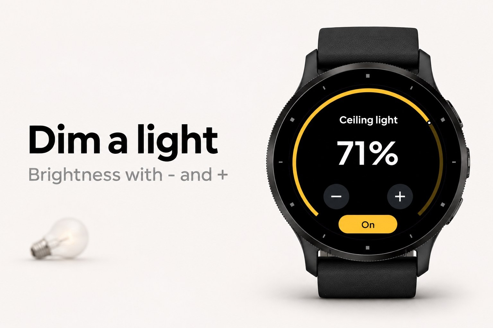
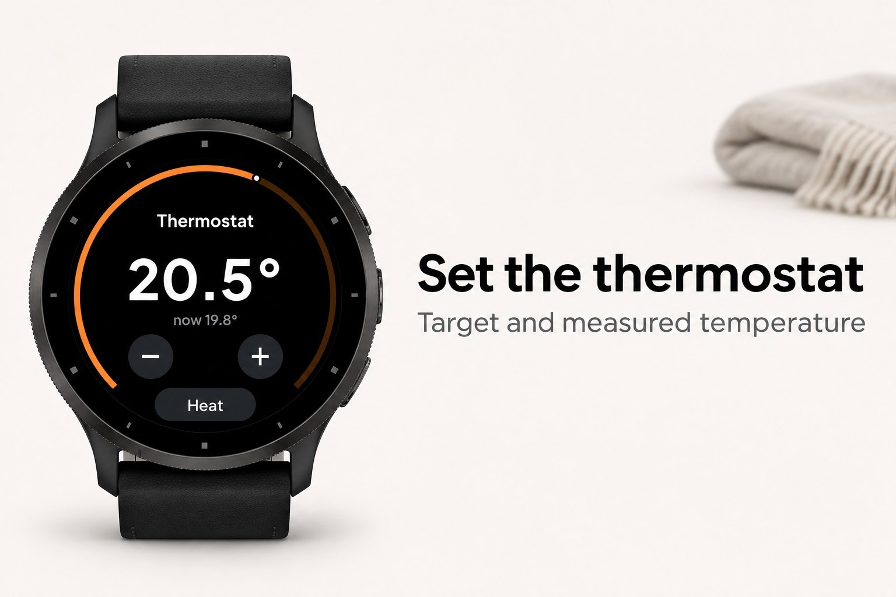
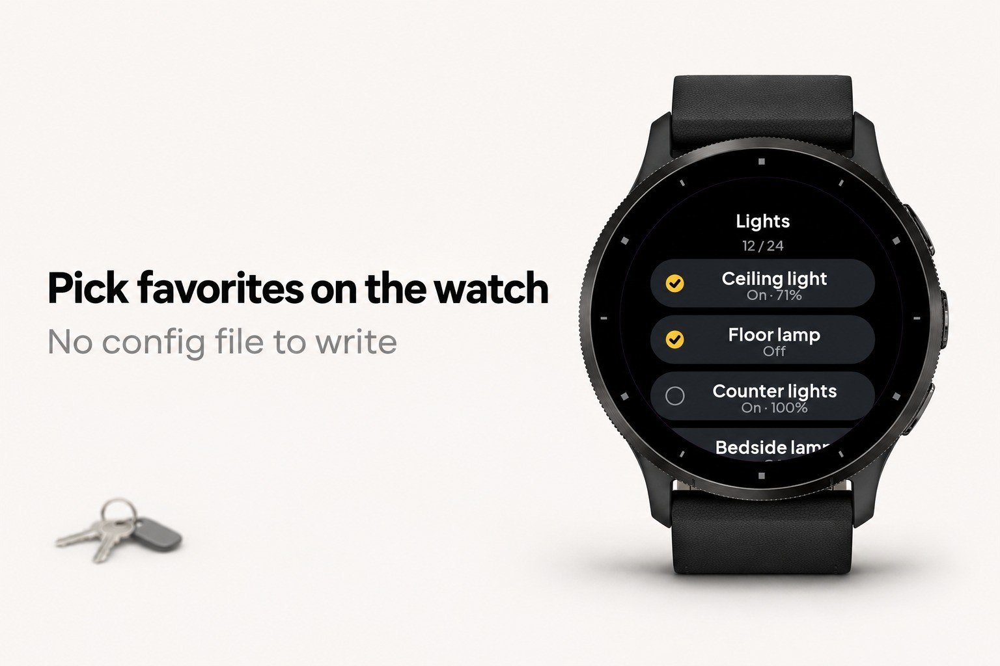
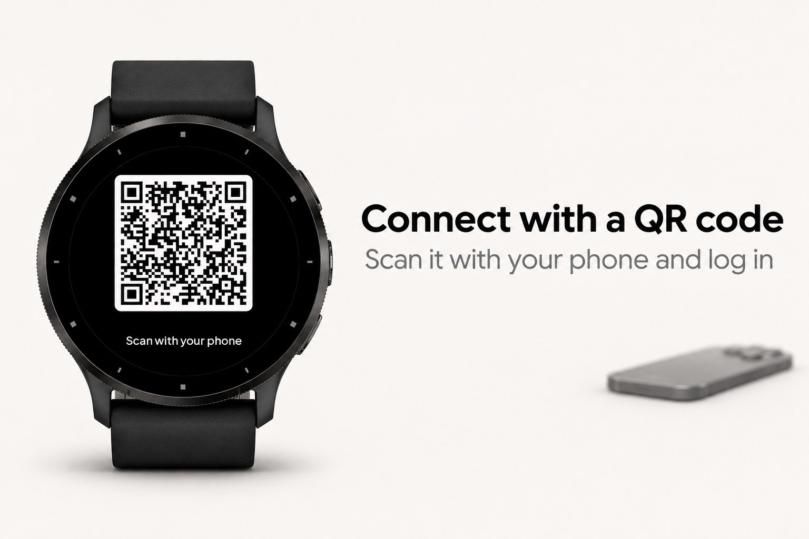

Domora
Remote for Home Assistant, set up on the watch.
Submitted to Garmin and waiting for review. The store link appears here once it is approved.





Domora is a remote control for Home Assistant on your watch. Your favorite devices are one tap away: lights, switches, thermostat, covers, locks, media players, scenes and sensors.
There is no file to write and no group to add to configuration.yaml. You scan a QR code on the watch with your phone, log in to your Home Assistant, and the watch is connected. Then you choose your favorites on the watch itself, by room or by kind. A built-in demo home lets you try everything first.
What it does
- Favorites page with large buttons; a lit button means the device is on. The top favorite is extra large: open the app and tap once
- Pick favorites on the watch by area or by kind, reorder them and remove them, all without a config file
- Areas page: every room in your home with its devices, loaded a few at a time so large homes work too
- Scenes page: your scenes and scripts, found automatically
- Sensors page and a glance with one or two values you choose, refreshed in the background
- Lights with brightness, fans with speed, thermostats with target temperature and mode, covers with open, stop and close, media players with volume, pause and next
- Locks and alarm panels: unlocking and disarming always ask for confirmation
- Also: input booleans, numbers and selects, vacuums, automations and buttons
- The button reacts at once, then Domora reads the real state back from your home
- Opens instantly with the last known state and refreshes while you look
- Clear messages when something is wrong (token refused, HTTPS needed, phone not connected, no answer), each with what to do
- Works with touch and with buttons only
- English, Dutch, German, French and Spanish
How to connect
1. Open Domora on the watch and choose Scan QR code.
2. Scan the code with your phone camera. On the page that opens, enter the address of your Home Assistant and log in there.
3. The watch says Paired. Choose Add favorites and pick your devices.
Prefer to do it by hand? In the Connect IQ app on your phone, open the settings of Domora and enter the https address of your Home Assistant (for example https://my-home.example:8123, a port is fine) and a long-lived access token (Home Assistant: your profile, Security, Long-lived access tokens, Create token).
What it needs
- Home Assistant 2023.4 or newer, reachable from the internet over HTTPS with a valid certificate (Home Assistant Cloud or your own domain). Plain http and self-signed certificates do not work on Garmin watches
- Your phone nearby with Bluetooth on; the watch reaches your home through the Garmin Connect app
- Privacy: with QR pairing the phone page creates an access token named Domora watch in your Home Assistant and passes it to the watch encrypted. The key is made on the watch, travels only inside the QR code to your phone and never reaches a server. The relay server holds only the encrypted message, for at most 10 minutes, and deletes it as soon as the watch has fetched it. After that the token stays on your watch and is only sent to your own Home Assistant
Domora is an independent app and is not affiliated with or endorsed by Home Assistant or the Open Home Foundation.